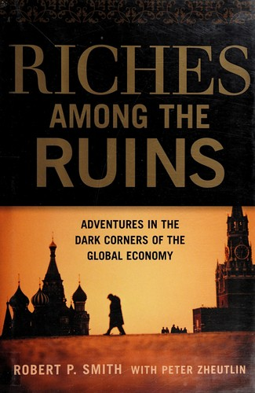

罗伯特·P·史密斯（Robert P. Smith, 1940—2019）毕业于鲍登学院和波士顿大学法学院，早年在美国国际开发署（USAID）担任贷款官员和经济联络官，先后驻越南、萨尔瓦多、多米尼加共和国和巴西。此后他加入圣保罗的德尔泰克银行（Deltec Bank），积累了在发展中国家第一线处理债务和资金流动的实战经验。1970年代中期回到美国后，他开设了一家专门从事国际债务催收的律师事务所。一次替客户追讨土耳其欠款的经历，让他意识到一个被华尔街忽视的巨大市场——那些深陷财政危机的国家，其主权债务正在以极低价格被抛售。1978年，他创立了图兰公司（Turan Corporation，原名Turam，取"Turkish-American"之意），专门交易主权不良债务，很快成为全球最大的私人控股主权债务交易公司之一。
这本书记录了史密斯三十余年间穿行于五大洲，在全球最动荡的经济体中买卖高风险证券的经历。从战火中的尼日利亚到萨达姆倒台后的伊拉克，从军政府统治下的危地马拉到后苏联时代的俄罗斯，他深入的每一个市场都伴随着政变、货币崩溃、独裁者的威胁或人身安全的直接危险。在1980年代的尼日利亚，他通过与持有尼日利亚债券的印度交易商合作，赚取了三至四亿美元的利润，由此获得了"丛林债券之王"（King of the Jungle Bonds）的绰号。《福布斯》杂志则称他为"金融界的印第安纳·琼斯"。
史密斯介入这一领域时，新兴市场债务交易几乎不存在。如今，这一市场的日交易量超过五十亿美元。新兴市场投资专家、《从第三世界到世界级》一书作者彼得·马伯（Peter Marber）将史密斯列为四位"远在华尔街各大机构之前，对债务市场乃至整个新兴市场投资界的诞生做出重大贡献"的先驱之一。马伯在本书推荐语中写道："离奇、引人入胜、比虚构更荒诞的真实故事……这本书是一份难得的享受：由一位真正的金融先驱提供的，对全球化某个偏远角落的精彩一瞥。"时任高盛国际副董事长罗伯特·霍马茨（Robert Hormats）的推荐语则写道："凭着胆识、头脑和相当程度的放肆，债券交易员罗伯特·史密斯在第三世界奔走了三十年，寻找财富，而冒险总是伴随交易不期而至。一部色彩丰富、极其个人化的编年史，记录了全球化早期前沿的生活。"
全书以每章一个独立冒险故事的方式展开，节奏明快，可读性极强——多位书评人将其比作间谍小说。但最后一章"美国黄昏"（American Twilight）笔调陡然转沉：史密斯将自己数十年间在失败国家观察到的经济病征——庞大的债务负担、日益扩大的贫富差距、基础设施的衰败、将宝贵资源消耗于战争——逐一对照当下的美国经济，提出尖锐的警告。这一章使全书超越了单纯的冒险叙事，成为一份对全球化时代国家兴衰逻辑的深刻反思。
对中国读者而言，这本书的价值在于提供了一个极为稀缺的视角。它不是从学术理论或投行研报出发谈论新兴市场，而是由一个亲身在废墟中穿行的交易者，用三十年的亲历讲述地缘政治风险如何转化为投资机会、信息不对称如何创造超额回报、以及在制度缺失和秩序崩溃的环境中如何评估和管理风险。无论是对前沿市场投资、主权债务交易感兴趣的专业人士，还是希望理解全球化暗面的一般读者，都能从中获得难以在其他书籍中找到的洞见。